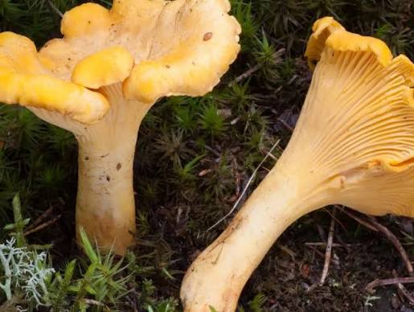

Kantarell
Latinskt namn: Cantharellus cibarius
Beskrivning: Äggullegul trattformad svamp med nedlöpande, gaffelgrenade åsar i stället för egentliga skivor. Växer i symbios med barr- och lövträd.
Ätlighet: Ätlig
Fyndplats: Jönköpings kommun